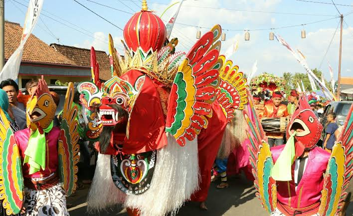
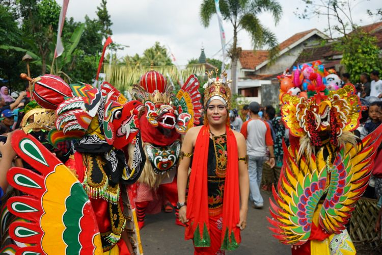
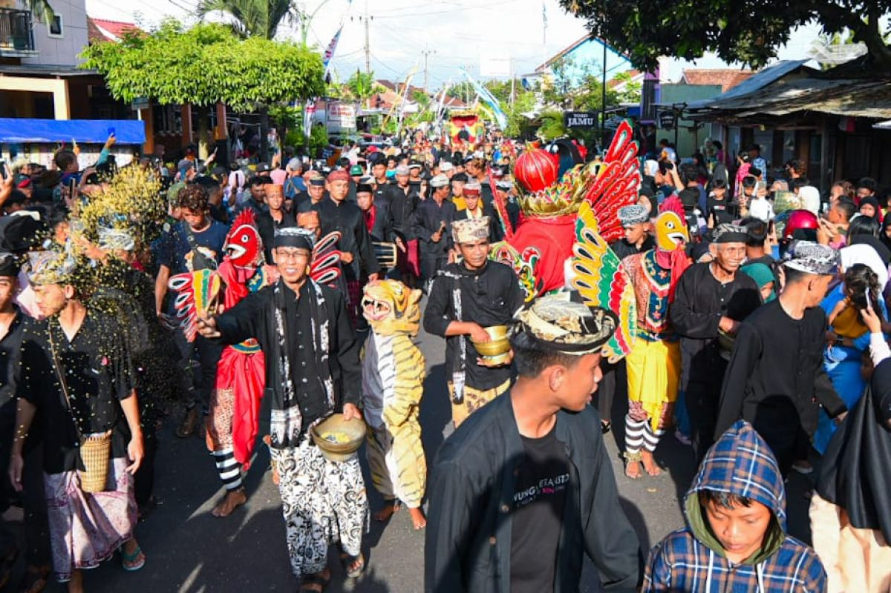
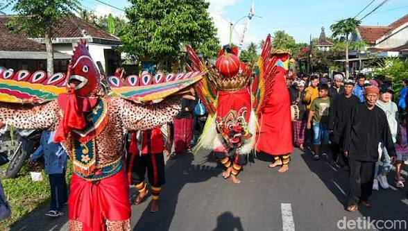
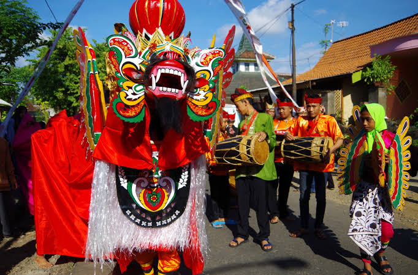

Sejarah
Barong Ider Bumi adalah upacara adat tolak bala (bersih desa) tahunan tertua yang sakral, yang diselenggarakan oleh masyarakat suku Osing di Desa Kemiren, Kecamatan Glagah, Kabupaten Banyuwangi. Ritual ini dilaksanakan setiap tanggal 2 Syawal (Hari Raya Idul Fitri kedua).
Berdasarkan catatan sejarah masyarakat adat, ritual ini pertama kali dilakukan sekitar tahun 1840-an. Kisah bermula saat Desa Kemiren dilanda musibah pageblug (wabah penyakit menular) yang sangat parah hingga menyebabkan banyak warga meninggal dunia secara mendadak. Di saat yang sama, para petani mengalami gagal panen total akibat serangan hama.
Dalam kondisi kritis tersebut, para sesepuh desa berziarah dan meminta petunjuk ke makam leluhur desa, Mbah Buyut Cili. Konon, sesepuh desa mendapatkan wangsit lewat mimpi untuk mengarak Barong keliling kampung sebagai sarana menolak bala. Benar saja, setelah arak-arakan pertama sukses dilakukan, wabah penyakit dan hama di desa tersebut berangsur-angsur hilang. Sejak momen itulah, tradisi mengarak barong ini diwariskan secara turun-temurun hingga saat ini.
Makna Filosofis
Nama "Barong Ider Bumi" diambil dari kosakata lokal yang sarat makna:
Barong (Bareng)
Menurut Ketua Adat Kemiren, kata "Barong" memiliki filosofi bareng atau bersama-sama. Ini menyimbolkan bahwa masyarakat harus selalu menjaga kerukunan, keharmonisan, dan gotong royong dalam menjalani kehidupan. Sosok Barong yang bersayap dan bermahkota juga dipercaya sebagai manifestasi nilai kebaikan, keadilan, dan pelindung desa.
Ider Bumi
Berasal dari kata Ider (berkeliling/berputar) dan Bumi (tanah/tempat berpijak). Secara harfiah berarti mengelilingi wilayah tempat tinggal.
Secara Keseluruhan
Tradisi ini bermakna sebagai bentuk ikhtiar spiritual untuk membersihkan desa dari segala energi negatif, penyakit, dan nasib buruk, sekaligus menjadi simbol rasa syukur yang mendalam atas kelimpahan rezeki berupa hasil bumi.
Prosesi Tradisi
Rangkaian ritual sakral ini dipenuhi oleh visual kebersamaan warga yang mengenakan baju adat Osing serba hitam:
1. Doa Restu di Makam Buyut Cili
Ritual dimulai dengan doa bersama oleh tokoh adat di petilasan Mbah Buyut Cili untuk memohon kelancaran jalannya acara.
2. Arak-arakan (Pawai Budaya)
Menggunakan iringan musik gamelan dan angklung, Barong diarak menyusuri jalan utama desa sejauh 2 kilometer, dimulai dari arah timur (gerbang masuk desa) menuju ke barat (tempat mangku barong), lalu kembali lagi. Arah barat dipilih karena berkiblat pada arah kiblat dalam ajaran Islam.
3. Ritual Sembur Uthik-Uthik
Ini adalah puncak keunikan prosesi. Sepanjang jalur arak-arakan, para sesepuh desa akan melemparkan atau menyemburkan campuran uang koin, beras kuning, dan bunga. Hal ini melambangkan proses membuang kesialan sekaligus menyimbolkan tradisi berbagi (shodaqoh) masyarakat Kemiren.
4. Kenduri / Selamatan Tumpeng Pecel Pitik
Acara ditutup secara meriah dengan makan bersama di sepanjang jalan desa. Setiap rumah warga menyajikan menu wajib Pecel Pitik (ayam kampung muda yang dibakar utuh lalu disuwir dan dicampur bumbu kelapa parut), yang melambangkan kesucian hati setelah merayakan Idul Fitri.
Fakta Menarik
Filosofi Angka 99.900
Dalam pelaksanaan festival modernnya, uang logam yang digunakan untuk ritual sembur uthik-uthik nominal totalnya harus tepat bernilai Rp 99.900 dan dicampur dengan 9 jenis bunga. Angka 9 ini merujuk pada jumlah 99 Nama Allah (Asmaul Husna).
Harga Mati Tanggal 2 Syawal
Meskipun Idul Fitri bergeser setiap tahunnya pada kalender masehi, ritual ini tidak boleh diundur maupun dimajukan. Pada tanggal 1 Syawal warga fokus bersilaturahmi, dan esok harinya barulah Barong Ider Bumi wajib digelar (bahkan jika kondisi cuaca sedang hujan deras).
Rebutan Koin Pembawa Berkah
Momen sembur uthik-uthik adalah yang paling seru. Warga lokal dan wisatawan dari berbagai daerah rela berdesakan berebut koin di jalanan karena dipercaya dapat membawa keberuntungan atau penglaris rezeki.
Galeri




